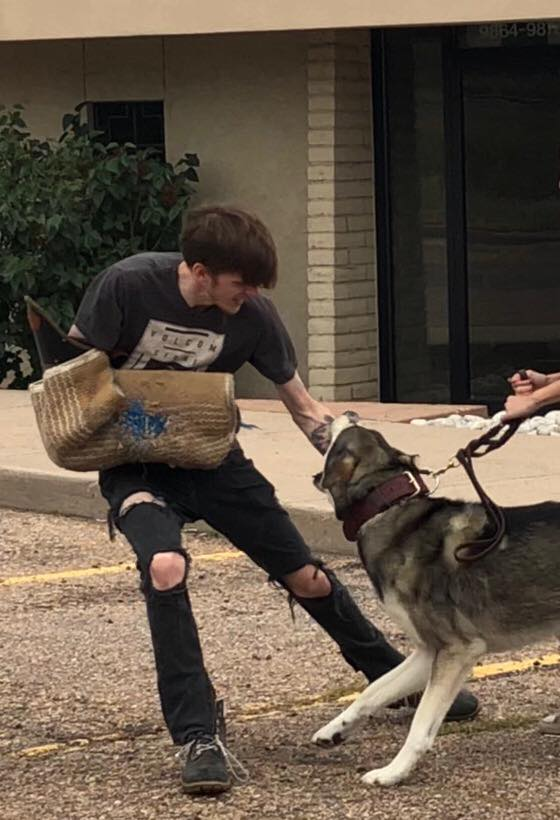

Hello, everyone! My name is Ashton Scott Hellwig, but closer friends refer to me using my initials: Ash. I live in Lafayette, Colorado and my major is declared as “Associate of Science: Mathematics for Transfer”. My Home College is Front Range Community College, mainly in the online medium for the last two years with only one in-person class I took in 2018. I prefer enrolling in online classes because it allows me more freedom to continue working my normal full-time hours and get school work complete without having to be physically present in a classroom. Because of my experience working in IT remoteley before switching to the industry I am in currently, online class was not too large an adjustment for me. One of my favorite hobbies is where I am currently working with various protection dog training schools as an protection dog training apprentice and agitator.

I plan on making time to complete this class whenever I can fit it in, which is pretty easy for me to do throughout the day as well as after work. I recently purchased a laptop for this specific purpose, so I am able to complete tasks throughout my work day. I am an inventory manager at a marijuana dispensary in Denver, and even though the cannabis retail industry is even more hectic during the essential-business designation than ever before I will still have significant time available to complete assignments as I have consistent schedule where I am out of work by 6:00PM every day. I don’t really travel so much with the exception of to Atlanta and Los Angeles. I was born in Kansas, then lived in St. Louis for 2 years, then in Birmingham for 3 years, and finally spent most of my childhood until my sophomore year of High School in Atlanta. I moved to Colorado in 2013 and when the rest of my family left for Los Angeles in 2016 I decided to stay here. With my degree, I want to go into veterinary bioinformatics research but my ultimate goal is to own my own licensed MIP here in Colorado foucusing on the solventless extraction of rare cannabinoids. Progress is being made on this day-by-day!
One time I can remember where an email was misunderstood by the recipient was towards the beginning of the pandemic entering our daily lives at the previous dispensary I worked as compliance assurance officer. I had sent an email to the head of our legal department and the general manager for the store I was located at detailing my reasons for not wanting to bring customers back inside and to continue the curbside pickup process as long as possible citing concerns from many employees which fell on deaf ears and they believed I was not “towing the line” as I should have been and that my tone was too aggressive. This led them to say “Either get behind our decisions, good or bad, or it is a very good time to collect unemployment right now”. I believe the miscommunication lied within the fact that without being able to effectively deliver tone through email, along with using “urgent”. sounding speech, this could have come off as rude or aggressive to them. I avoid this nowadays by utilizing telephone or face-to-face to discuss important matters rather than attempting an urgent sounding email.